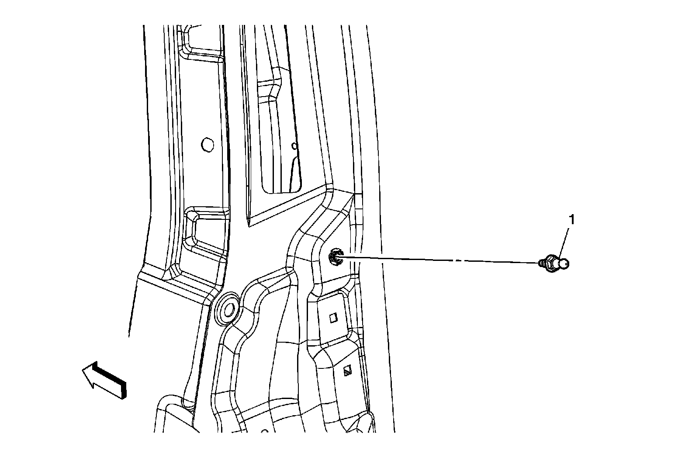
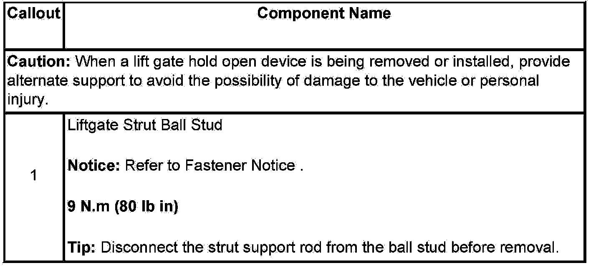

Operation CHARM
: Car repair manuals for everyone.
Home
>>
Cadillac
>>
2007
>>
Escalade ESV AWD V8-6.2L
>>
Repair and Diagnosis
>>
Body and Frame
>>
Doors, Hood and Trunk
>>
Trunk / Liftgate
>>
Trunk / Liftgate Shock / Support
>>
Service and Repair
>>
Liftgate Strut Ball Stud Replacement
Liftgate Strut Ball Stud Replacement
Liftgate Strut Ball Stud Replacement

